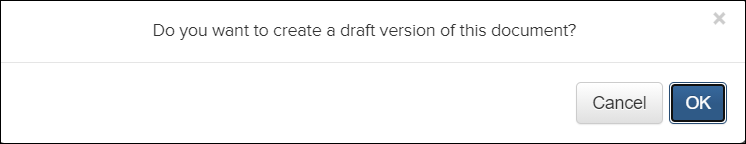
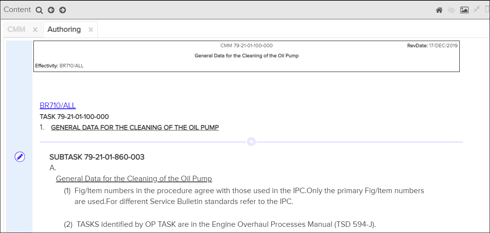

Authoring Mode
Not applicable for Pinpoint Standalone Light.
Note: You must have permission for the Can
author content privilege to access the authoring mode in Pinpoint. Users in the System
organization do not have access to the authoring functionality.
If you have
appropriate permissions, you can see and select the  Turn on authoring mode icon in the Content pane
header. This feature allows you to add new content and edit existing content for a document.
Refer to Add Section and Edit Section.
Turn on authoring mode icon in the Content pane
header. This feature allows you to add new content and edit existing content for a document.
Refer to Add Section and Edit Section.
- In the Library pane, select a library, then select a publication.
- In the Table of Content pane, select a document.
The document opens in the Content pane.
- In the Content pane header, click the
 Turn on authoring mode icon.
Turn on authoring mode icon.A message appears to confirm that you want to create a draft. For example:

- Click the OK button to create the draft.The Authoring tab appears.

Content Pane - Authoring Tab
When you enter the authoring mode, these changes to functionality occur:
- The attachments, annotations, and embedded references functionality is disabled while you are in authoring mode.
- The content you are authoring is locked to prevent other users from authoring the content.
Note: You can still navigate the Pinpoint application and use its features while in
authoring mode.
Authoring Mode Icon - Status Indicators
The
Turn on authoring mode icon changes to a different icon based on the
status of the document being authored. These are the icons that can display:
- : The document is available for authoring.
 : The document is in progress and checked out by
the current author.
: The document is in progress and checked out by
the current author. : The document is in progress and checked out by
another author.
: The document is in progress and checked out by
another author. : The document is in review, and the current
user has permissions to review it.
: The document is in review, and the current
user has permissions to review it. : The document is in review, and the current user does not
have permissions to review it.
: The document is in review, and the current user does not
have permissions to review it.
You can hover over the authoring mode icon when the document status is "In Progress"
or "In Review" to view the current status, owner, and the created/updated dates. For
example: